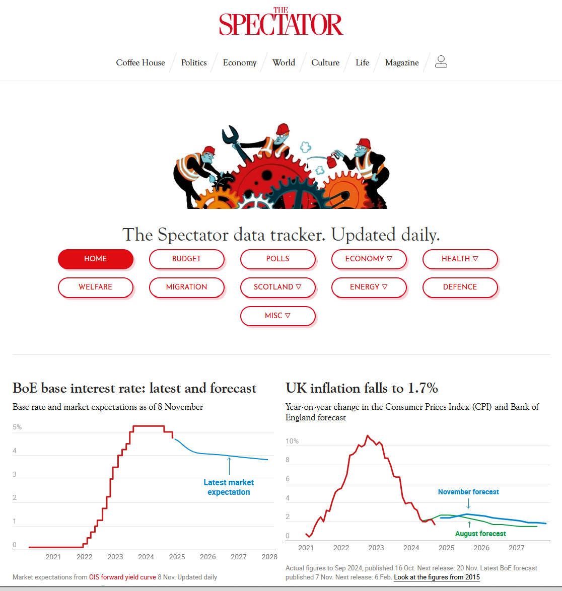

[0, 1, 4, 9, 16]Given a list of metric distances, write a function to compute their squares
Spin up VS Code, create a .py or .ipynb file
for .py deploy #%% for step-by-step exec.
define and test my_new_func, why should it come before invocation?
Compute the squares of the first five non-zero natural numbers
[0, 1, 4, 9, 16]Essentially, a local, list processing task
here my_new_func is a functor: the name of the function itself
Python treats it as it does for variable names (sometimes)
map() creates an iterable that returns the result of applying a given function to a sequence of values
query my_iterable to get a sequence with 1, 4, 9 etc.
Maps can be easily materialised into proper lists
Essentially, we are pushing a (very standard) for cycle
down into the Python runtime management
Define lists by the properties of their members, not by explicit membership
Styles:
extensional: name the items that make up the list
my_values = [1, 2, 3, 4, 5]
intensional: give the formula/condition that items must satisfy to be into the list
In Mathematics:
\(\{1, 4, 9, 16, 25\}\ =\ \{x\ :\ \exists y\: \in\: {\cal N}. x = y^2 \wedge 0<y \leq 5\}\)
list comprehension brings lists closer to a natural language specification
A shorter notation, closer to Mathematics
(Data Science codes tend to avoid nesting of for and while cycles)
with strings, looking for names beginning by ‘A’
List comprehension can be nested, iterating twice in the same line of code
Here we look for names containing ‘o’
this nested list comprehension saves two nested cycles
Example: compute the \(\mathrm{V}_{\circ} = \frac{4}{3}\pi r^3\) formula from school
my_vol() can be applied anywhere, and several times.
But for a one-time application, possibly deep down the code, the my_vol functor may not be needed after all
There is no functor, the name of the function is the function definition itself
lambda defines the input
the output is implicit with the evaluation of the formula`
will return (or be substituted with) 9.
Look at the (non-) differences:
The intended application of lambdas
maps the lambda definition onto each element of the list
n.b. new_squares is an iterator, not a real list
makes the results into a list.
compare the lambda mapping to non-lambda solutions for succintness
Normally, argument passing is positional:
\(\log_{10} 1000=3\)
\(\log_2 1024=10\)
P. functions allow calls with a variable number of parameters
Example: by log often the logarithm in base 10 is intended:
we save time and have better clarity by
assuming that 10 is the default base
allow calls like mylog(1000)
Rule: positional argument first, then arguments with default
Assumed values are described in the defpart
Positional argument must be defined before default argument
Note: for numpy the default base is \(e\): \(\log_e x = \ln x\).
A function can examine the values received with the call and decide a course of action

Get fresh data from data.spectator.co.uk/migration
Compute some interesting value, e.g.,
76-matplotlib/src/